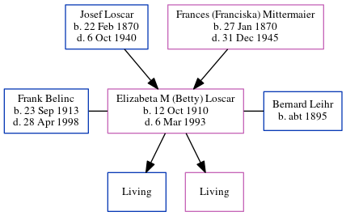

Elizabeta Leihr (née Loscar) 1910 - 1993
[ Home ] | [ Calendar ] | [ Surnames Index ] | [ Family History ]The child of Josef Loscar (a hatmaker) and Frances (Franciska) Mittermaier, Elizabeta Loscar, the great-aunt of Michele Copp (née Phillips), was born in Germany on Oct 12, 19101,2,3,4,5 and. She was married twice - to Frank Belinc (in 1951) Bernard Leihr. She has 2 surviving children, and 2 surviving children.
During her life, she was living in Pittsburgh, Allegheny, Pennsylvania, USA in 19301; in Akron, Summit, Ohio in 19352; in Davis, Tucker, West Virginia, USA on Apr 1, 19402; in Kansas before 19515; and in St. THOMAS, PA4. On May 14, 1921 she arrived in New York, New York.She traveled from Le Havre.
She died on Mar 6, 1993 in St Thomas, Franklin, Pennsylvania4,5.
Parents
- Josef was born on Feb 22, 1870
- Frances (Franciska) was born on Jan 27, 1870
Citations
- 1930 United States Federal Census Online publication - Provo, UT, USA: MyFamily.com, Inc., 2002.Original data - United States of America, Bureau of the Census. Fifteenth Census of the United States, 1930. Washington, D.C.: National Archives and Records Administration, 1930. T626, 2,667 rol (Marital Status: Married; Relation to Head: Wife)
- 1940 United States Federal Census Ancestry.com Operations, Inc. (Marital Status: Married; Relation to Head of House: Daughter)
- New York Passenger Lists, 1820-1957 Online publication - Provo, UT, USA: The Generations Network, Inc., 2006.Original data - Passenger Lists of Vessels Arriving at New York, New York, 1820-1897; (National Archives Microfilm Publication M237, 675 rolls); Records of the U.S. Customs Service, R
- Newspapers.com Obituary Index, 1800s-current Ancestry.com Operations Inc
- Social Security Death Index Online publication - Provo, UT, USA: MyFamily.com, Inc., 2006.Original data - Social Security Administration. Social Security Death Index, Master File. Social Security Administration.Original data: Social Security Administration. Social Security Death Inde
Family Tree
Generated by ged2site. Last updated on Jun 24, 2024